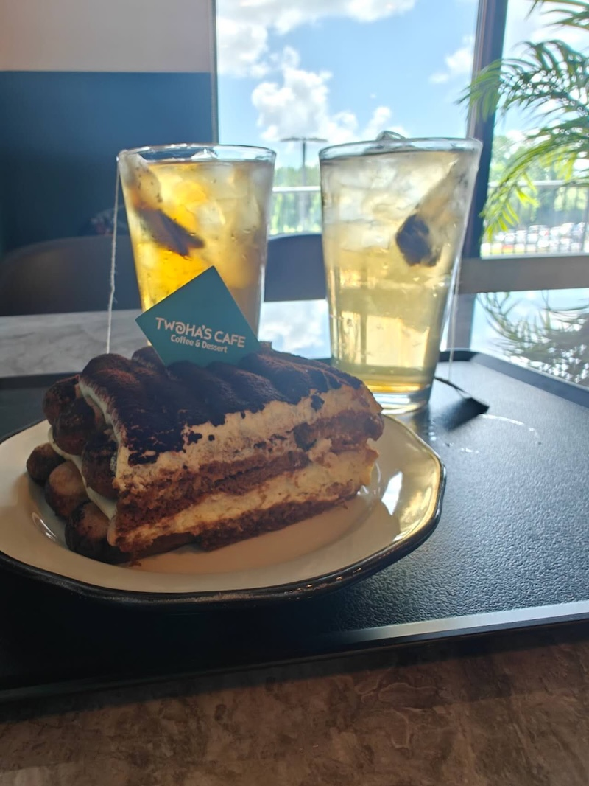
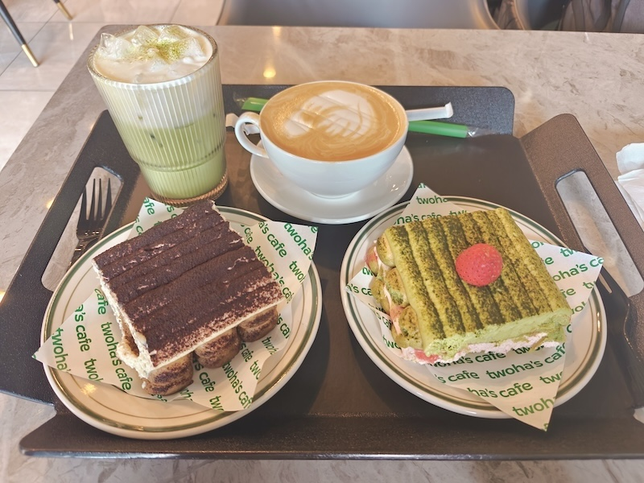
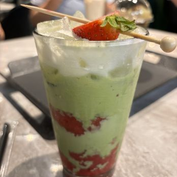

Type: ☕ Coffee
Address: 2645 N Berkeley Lake Rd NW Ste 231, Duluth, GA 30096
Hours: 11:00 AM – 12:00 AM on Monday through Thursday, and Sunday. On Friday to Saturday, the times are 11:00 AM – 1:00 AM.

My go-to order is the Snowing Matcha Latte — a creamy matcha latte topped with a sweet, fluffy "snow cap" foam. I like the drink cold, but there's an option to get it hot.
Matcha is a finely ground green tea powder with a vibrant green color and slightly earthy flavor.
The "snow cap" is a sweet cream foam that sits on top like snow.

Specialty: Signature matcha latte drinks and desserts such as bingsoo. One standout is the Strawberry Matcha Latte, which is a blend of strawberry milk, chunks, and matcha.
© 2026 Duluth Drinks Guide